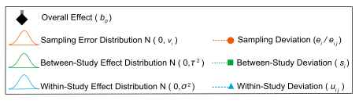

Primero lee nuestra introducción al metaanálisis y familiarízate con los modelos estadísticos comúnmente utilizados para el metaanálisis. Ahora, consideremos modelos más complejos.
Modelos más complejos
Hasta ahora, hemos ignorado por completo la no independencia entre los tamaños de efecto. Hemos asumido que tenemos un tamaño de efecto de un estudio (o artículo). Pero en realidad, un artículo generalmente contiene múltiples tamaños de efecto. Estos tamaños de efecto de los mismos estudios no son independientes entre sí. Consideremos un modelo en el que tenemos varios tamaños de efecto de estudios individuales, como nuestro conjunto de datos. Primero, te presento una representación matemática:
\[\begin{equation}
y_{ij}=b_0+s_i+u_{ij}+e_{ij}
\\
s_i\sim \mathcal{N}(0,\tau^2)\
\\
u_{ij}\sim \mathcal{N}(0,\sigma^2)\
\\
e_{ij}\sim \mathcal{N}(0,v_{ij})\
\end{equation}\]\
e_{ij}(0,v_{ij})
\end{equation}
donde \(u_{ij}\) es una desviación de \(s_i\) (el efecto dentro del estudio; el \(j\)-ésimo tamaño de efecto del \(i\)-ésimo estudio), se distribuye normalmente con \(\sigma^2\) (otras notaciones son comparables como se indicó anteriormente).
Podemos visualizar esto (nuevamente Figura 4 de Nakagawa et al. 2017). Y podemos ver por qué a este modelo se le llama modelo metaanalítico ‘multinivel’, una extensión del modelo de efectos aleatorios.

Podemos ajustar un modelo equivalente utilizando la función rma.mv. Necesitamos agregar paper (el efecto entre estudios) y id (diferentes tamaños de efecto; el efecto dentro del estudio) en nuestro conjunto de datos al modelo multinivel como factores aleatorios.
multilevel_m <- rma.mv(yi = yi, V = vi, random = list(~1 | paper, ~1 | id), method = "REML",
data = dat)
summary(multilevel_m)
##
## Multivariate Meta-Analysis Model (k = 102; method: REML)
##
## logLik Deviance AIC BIC AICc
## 7.1102 -14.2204 -8.2204 -0.3750 -7.9730
##
## Variance Components:
##
## estim sqrt nlvls fixed factor
## sigma^2.1 0.0015 0.0392 29 no paper
## sigma^2.2 0.0248 0.1573 102 no id
##
## Test for Heterogeneity:
## Q(df = 101) = 769.0185, p-val < .0001
##
## Model Results:
##
## estimate se zval pval ci.lb ci.ub
## 0.2578 0.0222 11.6046 <.0001 0.2142 0.3013 ***
##
## ---
## Signif. codes: 0 '***' 0.001 '**' 0.01 '*' 0.05 '.' 0.1 ' ' 1
OK, esto no tiene \(I^2\). En realidad, hemos propuesto una versión de modelo multinivel de \(I^2\) (Nakagawa & Santos 2012), que, en este caso, se puede escribir como:
\[\begin{equation}
I^2=\frac{\tau^2+\sigma^2}{(\tau^2+\sigma^2+\bar{v})},
\end{equation}\]
Ten en cuenta que tenemos \(\tau^2\) y \(\sigma^2\), que son sigma^2.1 y sigma^2.2 en la salida anterior, respectivamente. Utilizando esta fórmula, tenemos una heterogeneidad total \(I^2\) del 88.93% (el \(\bar{v} = 0.0033\) para nuestro conjunto de datos; consulta Nakagawa & Santos 2012 para saber cómo obtener esto). Como podrías imaginar, este valor es casi idéntico al que obtuvimos del modelo de efectos aleatorios (88.9%). Pero este modelo es mejor ya que estamos tratando explícitamente la falta de independencia debido a los tamaños de efecto de los mismos estudios (aunque resulta que el problema no está completamente resuelto…).
Como podrías imaginar, podemos agregar más niveles a estos modelos multinivel. Por ejemplo, podríamos agregar genus en el conjunto de datos, ya que las especies relacionadas probablemente sean más similares entre sí. Pero es mejor modelar esta falta de independencia taxonómica utilizando la filogenia (que es el tema de la siguiente sección). Ten en cuenta que también podemos realizar una meta-regresión utilizando rma.mv; modelos más complejos (diferentes versiones de un modelo multinivel) se explican en Nakagawa & Santos (2012).
Metaanálisis filogenético
Como mencioné anteriormente, hasta ahora también hemos ignorado otro tipo de falta de independencia, es decir, la relación filogenética. Chuck Darwin desafortunadamente (o afortunadamente) descubrió que todas las especies en la Tierra están relacionadas, por lo que debemos abordar este problema.
En realidad, solo necesitamos modelar la falta de independencia filogenética agregando el grado de relación entre las especies como una matriz de correlación. El término “filogenia” o phylo, que crearemos a continuación, se puede agregar como un factor aleatorio a un modelo multinivel.
Esto significa que necesitamos un árbol filogenético para nuestro conjunto de datos. Para este conjunto de datos, hemos preparado un árbol para que lo descargues aquí. Pero no es tan difícil obtener un árbol utilizando el paquete llamado rotl.
Primero, instala y carga el paquete ape, que utilizaremos para importar el archivo de árbol y visualizar la filogenia.
library(ape)
##
## Attaching package: 'ape'
## The following object is masked from 'package:dplyr':
##
## where
tree <- read.tree(file = "tree_curtis1998.tre")
plot(tree, cex = 0.7)

Podemos crear una matriz de correlación (una matriz de relación entre especies). He omitido las explicaciones de estas operaciones, excepto por decir que tenemos una matriz de correlación para ajustar al modelo.
tree <- compute.brlen(tree)
cor <- vcv(tree, cor = T)
Necesitamos un poco más de preparación, ya que no tenemos una columna que contenga los nombres completos de las especies (la llamamos phylo). Además, resulta que necesitamos corregir algunos errores tipográficos en las columnas genus y species de nuestros datos.
library(Hmisc)
phylo <- tolower(paste(dat$genus, dat$species, sep = "_"))
# note: 'populusx_euramericana' should be same as 'populus_euramericana'
phylo <- gsub("populusx_euramericana", "populus_euramericana", phylo)
# these two species are the two different names of the same species
phylo <- gsub("nothofagus_fusca", "fuscospora_fusca", phylo)
phylo <- capitalize(phylo)
dat[, "phylo"] <- phylo
Ahora tenemos nuestra correlación filogenética cor y una columna con los nombres de las especies phylo, y podemos ejecutar nuestro meta-análisis nuevamente con un efecto filogenético.
phylo_m <- rma.mv(yi = yi, V = vi, random = list(~1 | phylo, ~1 | paper, ~1 | id),
R = list(phylo = cor), method = "REML", data = dat)
summary(phylo_m)
##
## Multivariate Meta-Analysis Model (k = 102; method: REML)
##
## logLik Deviance AIC BIC AICc
## 7.1102 -14.2204 -6.2204 4.2401 -5.8037
##
## Variance Components:
##
## estim sqrt nlvls fixed factor R
## sigma^2.1 0.0000 0.0000 36 no phylo yes
## sigma^2.2 0.0015 0.0392 29 no paper no
## sigma^2.3 0.0248 0.1573 102 no id no
##
## Test for Heterogeneity:
## Q(df = 101) = 769.0185, p-val < .0001
##
## Model Results:
##
## estimate se zval pval ci.lb ci.ub
## 0.2578 0.0222 11.6046 <.0001 0.2142 0.3013 ***
##
## ---
## Signif. codes: 0 '***' 0.001 '**' 0.01 '*' 0.05 '.' 0.1 ' ' 1
¡Todo este esfuerzo y no hay variación debida a la filogenia! Por lo tanto, no necesitamos este término de filogenia (es decir, phylo).
Además, este modelo multinivel se puede considerar como un método filogenético comparativo. Hay varias cosas que debes saber y tener cuidado (por ejemplo, asumimos el modelo de evolución de movimiento browniano en el modelo anterior, ¿qué significa esto incluso?). Pero Will y yo hemos escrito un buen “prontuario”, así que por favor lee ese prontuario: Cornwell & Nakagawa (2017).
Desafortunadamente, hay otros tipos de no independencia que no se han abordado aquí. Resumimos todos los tipos en nuestro artículo reciente: Noble et al. (2017). Así que también lee esto si te interesa.
Modelos robustos complejos (¡la última sección!)
También tenemos una versión multinivel del modelo robusto. Es fácil de ajustar usando la función rma.mv (no incluimos phylo ya que no explicó ninguna varianza).
# you can put a marix or vector to W which is equivalent to 'weights' in rma
robustml_m <- rma.mv(yi = yi, V = vi, W = wi, random = list(~1 | paper, ~1 | id),
method = "REML", data = dat)
summary(robustml_m)
##
## Multivariate Meta-Analysis Model (k = 102; method: REML)
##
## logLik Deviance AIC BIC AICc
## 4.6819 -9.3639 -3.3639 4.4815 -3.1165
##
## Variance Components:
##
## estim sqrt nlvls fixed factor
## sigma^2.1 0.0015 0.0392 29 no paper
## sigma^2.2 0.0248 0.1573 102 no id
##
## Test for Heterogeneity:
## Q(df = 101) = 769.0185, p-val < .0001
##
## Model Results:
##
## estimate se zval pval ci.lb ci.ub
## 0.2088 0.0483 4.3200 <.0001 0.1141 0.3036 ***
##
## ---
## Signif. codes: 0 '***' 0.001 '**' 0.01 '*' 0.05 '.' 0.1 ' ' 1
Creo que este es el modelo que hemos estado buscando, es decir, nuestro modelo final. Al menos para este conjunto de datos.
Más ayuda (referencias)
¿Tienes alguna pregunta? O envíame un correo electrónico a s(-dot-)nakagawa(-at-)unsw(-dot-)edu(-dot-)au. También visita nuestro sitio web.
Visita el sitio web del paquete metafor. Allí encontrarás muchos ejemplos prácticos.
Cornwell, W., and S. Nakagawa. 2017. Métodos comparativos filogenéticos. Current Biology 27:R333-R336.
Nakagawa, S., D. W. A. Noble, A. M. Senior, and M. Lagisz. 2017. Meta-evaluación de meta-análisis: diez preguntas de evaluación para biólogos. BMC Biology 15:18.
Nakagawa, S., and E. S. A. Santos. 2012. Aspectos metodológicos y avances en meta-análisis biológico. Evolutionary Ecology 26:1253-1274.
Noble, D. W. A., M. Lagisz, R. E. O’Dea, and S. Nakagawa. 2017. Análisis de no independencia y sensibilidad en meta-análisis ecológicos y evolutivos. Molecular Ecology 26:2410-2425.
Autores: Shinichi Nakagawa y Malgorzata (Losia) Lagisz
Año: 2016
Última actualización: Jun. 2023